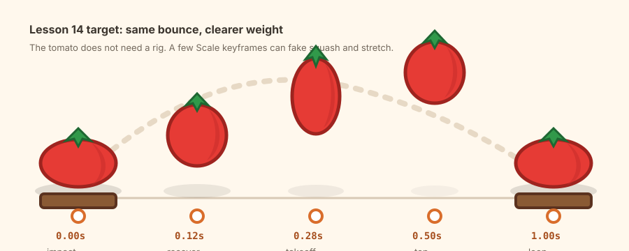

Day 14 - Week 3 animation bridge
14Bounce timing and squash - make the tomato feel heavier
Yesterday's tomato moved. Today it gets weight. You will keep the same tiny bounce loop, then add timing decisions and Scale keyframes so the motion feels more like a game asset and less like a sliding object.
One improved 1-second tomato bounce GIF: the tomato squashes on impact, stretches during takeoff, hangs briefly at the top, and lands cleanly into the loop.

Warm up - 30-second recall
Answer first, then open the cards.
What is a keyframe?
Why did the first and last bounce keyframes match?
Why did you animate the tomato group instead of every part?
The one new idea - scale can fake weight
You do not need a character rig to show weight. In a small stylized prop, a quick squash and stretch can sell the impact: wide and short when the tomato hits the counter, tall and narrow when it springs upward, normal at the top.
Blockbench's official Overview & Tips page says Animate mode has a Keyframe
Panel, an interpolation dropdown, and a Timeline for
keyframes. The local source shows new keyframes default to linear interpolation, so
today's motion stays predictable while you learn the Scale channel.
Skip Bezier handles and the Graph Editor today. They are real tools, but this lesson's win is smaller: clear time placement plus a few Scale keyframes.
Settings tutorial - interpolation and scale
Keep the Animation Timing Cheatsheet open.
| Control | Use it today for | Beginner-safe value |
|---|---|---|
| Keyframe Panel | Edit selected keyframe values. | Select one keyframe before changing values. |
| Interpolation | Control how Blockbench moves between keyframes. | Linear. Do not change it yet. |
| Scale channel | Save squash and stretch shapes. | Small values: X/Z 1.15, Y 0.85. |
| Timeline snapping | Place keyframes on clean frame times. | Use typed times if dragging feels imprecise. |
| Looped Playback | Check weight and loop pop repeatedly. | On while previewing. |
Do it with me
-
Open yesterday's bouncing tomato file
Save a copy namedbouncing-tomato-squash-loop. Keep yesterday's file intact so you can show a before/after if you want. -
Preview the old loop once
In Animate mode, play the currenttomato_bounceanimation. Notice the problem: the tomato moves up and down, but it has little weight. -
Rename the animation
Duplicate or rename the animation totomato_squash_bounce. Keep the length at1.0s. -
Use five timing points
Keep the loop simple:0.00s,0.12s,0.28s,0.50s, and1.00s. These are close enough for a tiny game-prop loop. -
Impact at
Select0.00s: squashtomato_bounce_group. At0.00s, add or select a Scale keyframe. TryX 1.15,Y 0.85,Z 1.15. -
Recovery at
Move to0.12s: normal shape0.12s. Add a Scale keyframe withX 1,Y 1,Z 1. This makes the squash snap back quickly. -
Takeoff at
Move to0.28s: stretch0.28s. Add a Scale keyframe withX 0.92,Y 1.12,Z 0.92. This makes the upward motion feel springy. -
Top at
Move to0.50s: normal shape and hang0.50s. Keep the tomato at the top position and set Scale back to1, 1, 1. If the top feels too fast, hold the top position until about0.58swith one extra Position keyframe. -
Landing at
Move to1.00s: match the start1.00s. The tomato should be on the counter again with the same squash as0.00s:X 1.15,Y 0.85,Z 1.15. -
Keep interpolation linear
Select the transform keyframes and check the Keyframe Panel. Leave Interpolation onLinear. Today's shape changes are already enough. -
Preview at thumbnail size
Turn on Looped Playback and zoom out. If the squash is invisible, increase it a little. If it looks like a bug, decrease it. -
Capture the improved loop
Export or record a GIF with a fixed camera. Optional but useful: put yesterday's GIF beside today's GIF for a before/after post. -
Post your Day-14 update
Publish the GIF and a short note. Streak: Day 14.
When a loop feels stiff, do not add complexity first. Ask: which keyframes say impact, which say hang, and which say recovery?
itch.io post (English):
RedNote / 小红书 (中文):
Quick self-check
Say the answer first, then open the card.
What does a Scale keyframe store?
Why squash the tomato at impact?
Why keep the final Scale keyframe equal to the first?
What should you do if the squash looks too silly?
Read the official Blockbench Overview & Tips section on Animate mode, especially the Keyframe Panel, interpolation dropdown, Timeline, and Graph Editor. For the course-specific summary, use the Animation Timing Cheatsheet and the local UI atlas pages for Keyframe and Timeline.
If the tomato scales permanently, only one part stretches, or the loop pops at the end, send me a screenshot of the Timeline and Keyframe Panel. I can tell which channel or time point is wrong.